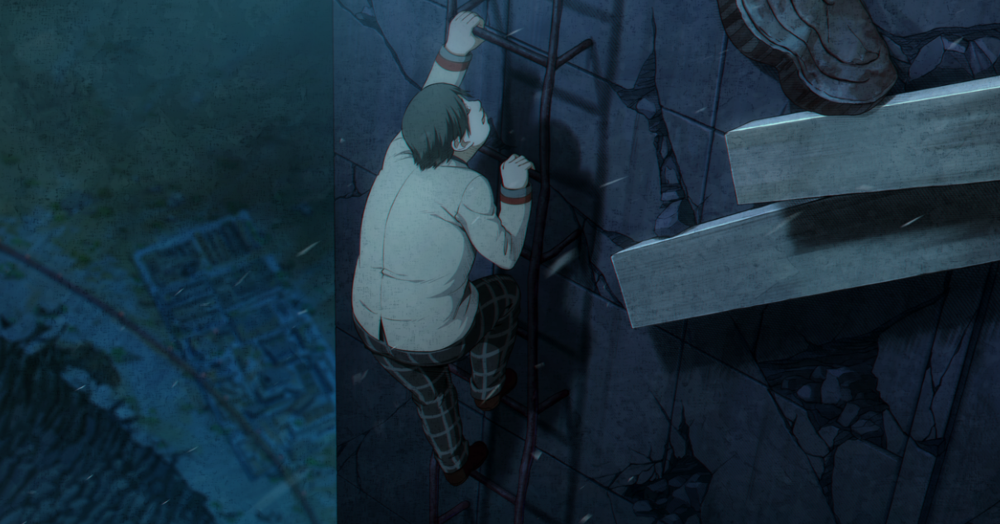
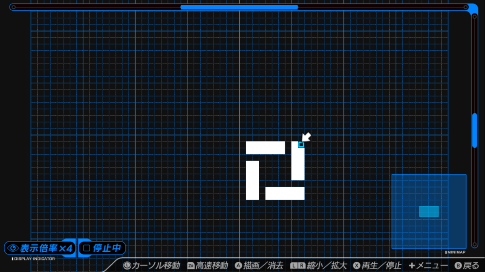
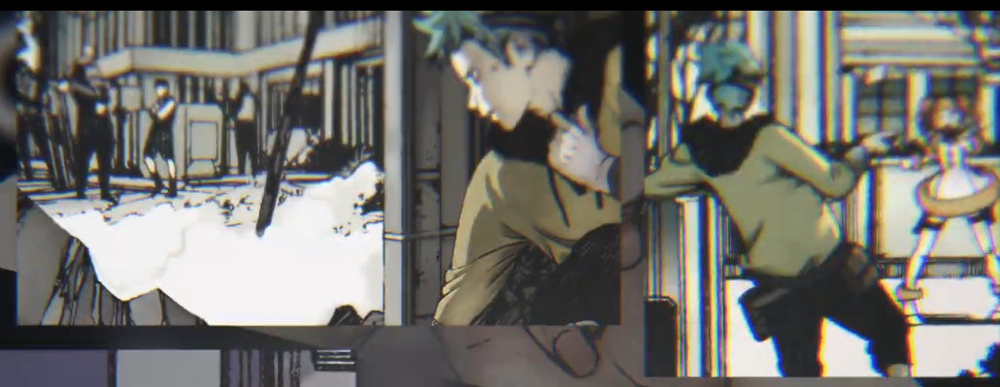
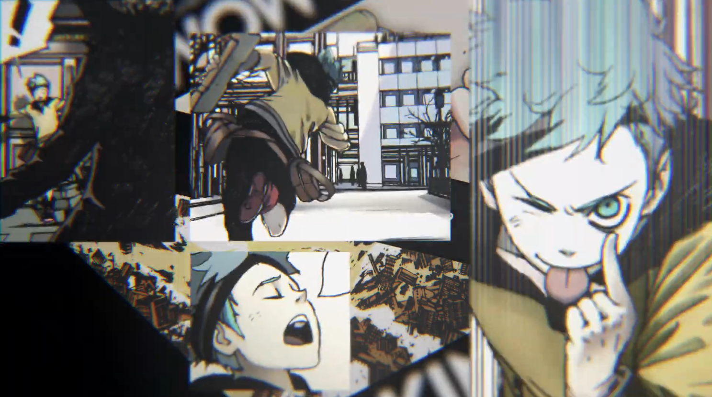
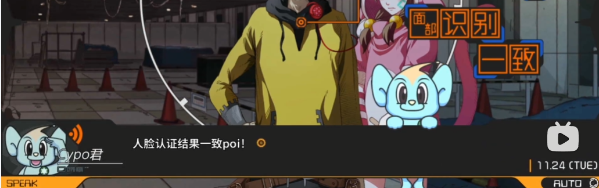

批改科A系列新作《匿名代码》的七年答卷
评分：9 时长：32h
本文纯属主观臆断，毫无事实根据，仅为通关后欲一吐为快的发泄口
如果你仍然感兴趣，可以不耐烦地继续听我比叨
前言
无剧透的说，匿名代码是个人认为值得一玩的作品。
作为一款普通的 ADV 游戏，其质量可以达到良作以上；
而作为一款 科学ADV 游戏，其世界观设定、剧本架构可以说是“方向错了”。
本作在人物塑造上有所欠缺，在宣发上走了错误的方向，在制作上优秀的很优秀，平庸的又难以让人满意。在故事节奏把握上比较出色，能很好地调动观众情绪。在 meta 元素上设计十分精良、在音乐、系统和美工上都下了功夫。
如果你能抛去它会对科学adv世界观设定有所推进的想法，放心去体验在 meta 下这个故事带给你的爽感，那么，匿名代码还是值得一玩的。
下面，则是我对本作各个方面表现上的拙见，涉及剧透，不想看剧透的各位还请推完再来回看 不看也行
看到标题，了解这个系列的大家自然也就心领神会了。本作《匿名代码 | Anonymous;Code》 是 2015 年 3 月 18 日 和大家熟知的《命运石之门0 | Steins;Gate 0》同时立项的。
从立项至今已有七年之久，期间 SG0 甚至迎来了动画化，于 2018 年 以四月新番的身份再次引来一定的热度，笔者也是在这一时期了解到 科学ADV系列（科A）并从此深深地被它所吸引。
由于各种原因，AC 并没有如愿在 2016 年与大家见面，而是陷入了不断跳票、三年又三年的延期之中。制作会社 5pb./mages. 社长 志仓千代丸 则表示很大原因是因为世界科技发展的问题，需要不断修改剧本。此外，原本 AC 打算与《超自然九人组| Occultic;Nine》一起另起一个新系列：Science Visual Novel。当然最后还是并入了科A，由此剧本也得大改。
AC 直到如今的 2022 年 7 月 28 日 才问世，可以说整个制作周期对于一款 adv 游戏来说无疑是很长的（虽然在此期间陆续出了其他作品）。
那么，如此之长的制作时间，AC 究竟给观众带来了什么呢？
故事节奏
单从故事来说，七年的制作周期为 AC 带来了一定的好处。长时间的所谓剧本修改和打磨，给足了 AC 独有的体验。
这或许是因为志仓沿用了前作《**混沌之子 **| Chaos;Child》的 PLOTALIZE 剧本系统（通过多人阅读体感的反馈，不断调整剧本节奏的一种创作系统）。在 AC 上，这个系统运用得很成功，很大程度上调动故事的节奏感。但是也过于成功了。
由于过度地依赖这种系统，你能明显地在游玩过程中感受到剧情正一缓一紧地发展。
除了第一章的王道开局，第二章开始，向玩家展现步论的 Save&Load 能力，并在玩家和步论的协调下成功躲过了 Cyber Force Doll 三人组的追捕。显然，这类似于一个【玩法介绍与教学】的过渡章节。而此后，介绍了女主 爱咲桃(momo) 的一部分来历后，众人决定了为 momo 的愿望寻找 Cicada3301 中之人 古里久宪斗 踏上了解决各种 Quest 事件以接触古里久的道路。于是，紧张刺激的、与 Cicada3301斗智斗勇的各种事件就此展开。
由此，前期的剧情简单总结一下，就是：
一章用于日常、吐设定。这里吐的设定都是一点一点展开，并没有过于震撼地一次性冲击。设定具体还可以细分为 科学方向的科普 和 梵蒂冈方向的宗教设定，而二者最后会通过地球模拟器汇聚在一起；
一章用于展开、爆发。具体是主线剧情的推进和 Quest事件 的解决。
事实上，从整个游戏的结构安排上也能看得出来。在我通关游戏全部 BAD END 以及各种隐藏要素后，更加笃定了这个设计。在日常篇章中，充斥着许多玩家可以通过黑客扳机触发的隐藏剧情，这些剧情是不会影响主线进度且丰富了角色背景的，这将在下一小节详细阐述。而在事件篇章中，黑客扳机的作用则是避免进入 be，帮助步论。
可见，这样的设置安排确实足以调动玩家情绪，但是很容易陷入套路化创作，且逐渐审美疲劳。事实上也确实如此，在第三章玩家经历了足以堪称绝妙刺激的 骇客劫机 事件（hihack，2037年发动的第一次 Quest）后，后面的几次事件也确实有玩家反映，即使精彩也颇为疲惫，失掉了惊艳之感。当然，解决事件中诸如区块链之类的计算机小知识讲解也是让部分玩家较为无力的原因之一。
人物塑造
本作人物出奇的多，拥有 live2d 的人物就有 22+1（外加风都的AI 女友 ） 个，而具体到每一个人的人物形象刻画则实在薄弱。更有甚者，步论的两个 Graper 修车好友更是出场和对话不到 3 分钟。自然，这是多种原因造成的。其一是整个游戏的文本量不大，且重心在拯救世界的主线剧情当中，这使得剧情紧张的同时又引入了人物刻画不细致、模板化的问题。
依赖于视角的切换
- 我们可以体会到：Cyber Force Doll 成员：仓科子鹿 对于做警察的心路历程；
- 我们可以感知到步论的父亲坚守自身信念这一点对步论产生的影响；
- 我们可以理解被遗弃在外太空 14 年的小津叔对宇宙的敬畏与恐惧，对于数字化世界的抵触与无奈；
- 我们可以体会到 momo 对自身使命的追逐、对步论的感情变化。等等。
如果说，视角切换的引入是为了达到人物塑造的目的，它做到了但又没有做到，不仅如此，频繁的视角切换甚至打乱了观感。
比如，在 EGG事件 中，安排牧风都去处理 MTT 时钟时，视角曾切到他那里去，展现了他努力爬上去的过程。你可以猜测出，这里可能是要描写牧风都为了步论、为了友谊和拯救未曾蒙面的自杀者，克服了恐惧的这个心路历程。然而这段除了展现了一张 CG 和几句对白外，再无深入。

然而就上述 5 点就是全篇最明显的描写了吗？其实也不然。
如果我们在日常篇章中合理运用了黑客扳机（不知道的各位请前去查看我做的攻略，以体验 AC 完整的剧情），我们将在日常篇中解锁：
- 步论和十字的第一次相遇以及如何创立了中野交响曲；
- 数学家莉迪、小津叔以及鲛洲馨是如何认识的，他们是什么关系；
- 关于乃乃花的小故事
- momo 对圣诞节的态度等等。

也就是说，你能看出剧本中对于角色塑造这一点是有所尝试的但是很多都是点到为止。比如，乃乃花讲述父母的故事时，我们可以触动黑客扳机像前面小津叔那样解锁关于乃乃花的故事，然而你能感觉得到有这个企图但是被割舍了。
可以明白，AC 篇幅短、文本简的特性影响了群像的深入刻画，除了本身 AC 的主线故事外，没有余力再处理多人的人文色彩，实在可惜。
META科学
AC 在宣发时，以 META科学ADV 为称号。而这一称号属实是实至名归了。
故事的主人公拥有的 Save&Load 是玩家赋予他的，而这一功能称为了玩家和步论交流的桥梁。在游玩过程中，玩家应该把握扣动黑客扳机的时机，协助步论通过 Load 一次次解决事件，甚至拯救世界。这一次次黑客扳机的选择也影响着结局的走向，是属于 AC 的选择支，这无疑是最纯正的 meta 元素。
在 UI 上，玩家游戏系统的 存读档界面 是和步论共享的。虽然我们不能覆盖掉步论的存档，但是我们可以读取步论的存档，这种互动很新颖。除此之外，在故事初期，我们能看到步论自己在选择存档槽位自己存档，他读档时也是如此，并且此时步论和玩家保持着一定的距离，在他看来，你是潜入他 BMI 的不知名黑客。
【本段超剧透警告】而值得一提的则是第十章。步论自己的存档被完全消除之后，他陷入了萎靡不振的状态。在即将展开最后的作战时，如果你在前期和步论的配合中培养了足够的默契，那么你能从他的话语中感受到他的心情。此时你并不能扣动黑客扳机，但是如果你在这个时候打开系统画面，帮他存一个档。那么，你将完美避过 BE18。是的，在步论觉得没有希望的时候，你给予了他希望。他并不是不能读取玩家存的档，他之前只是不敢冒险，而你和他的羁绊让他相信了你，他会读取你自己的存档！他丧失了存档能力，但是屏幕外的你可以帮他存，这种默契使得故事推向了高潮。
而 AC 秉承着科学ADV一贯的作风，这样依靠于游戏机制的 meta 它也解释给你看。于是，世界层的概念、负荷领域外的概念出现了。玩家的出现，给了步论所在的世界层可以被拯救的希望。这是依靠于前期地球模拟器设定铺垫的、这是在玩家游玩过程中深有体会的、这是 AC 在 meta 科学上所追求的 独特的爽感。

历史遗留问题
这里首先有必要再谈一下 AC 在宣发上的问题。
事实上，世界层这个概念理应对于整个游戏理应是最核心或者说最应该隐藏的设定，然而于 2015 年 官方就毫不加以掩饰地宣扬起了世界层。这使得一众粉丝疯狂基于这个设定进行猜想，AC 的故事期待值一度被拉得很高。
大家想看到的是像石头门那样：把世界线收束这个设定融入剧本、贯彻始终，最后随着剧情发展不断抽丝剥茧、理解核心设定及其运作机理的故事。
而 AC 的故事之于世界层这个设定却只作为最后的解决方案而存在，没有过多的深入也没有留下衍生的“逻辑推理游戏”。
设想，如果前期宣传时，以 Cicada3301、梵蒂冈、GAIA地球模拟器作为噱头，那么本作毕竟不会引来如此大的不满足感。不仅如此，PV 中出现斐波那契数列/黄金螺旋，及 1.123581 与 1.048596 的叠加问题 都没有。所以当然，七年的时间最终成品如此，也使得其不足以满足科A粉丝的期待。合理推测，这部分内容是作为科a下一作的核心，包括世界层问题。

然后是剧本问题。
从整体的体验上来看，正如前面 故事节奏 一节所言，在节奏上有所取舍。但是除此之外还不难发现，整个故事从第三章、第四章往后，开始出现了问题。
如果你留心游戏攻略的话，你会发现，第四章之后的日常部分的漫画扳机直线下降，也就是说像第二、四章那样通过黑客扳机实现的用来丰富人物以及为故事添枝加叶的小细节直接没有了。不仅如此，对于主线剧情用于判断 BAD END 的黑客扳机也逐渐敷衍。BE 在后期章节不再像前期那样有所依据、有信息量，取而代之的则是一种为了 BE 而 BE 的设计。
此外，漫画扳机也是因为剧本修改问题被大刀阔斧地进行了删减。回看 2016 年 原版的 AC 试玩画面，你可以发现在旧版中，同样存在 骇客劫机 事件（但旧版历史舞台在 9.15 并且没有 cicada3301）、步论甚至可以意识到 AutoSave 等元素。而从历代 PV 中，我们可以发现还有许多漫画扳机并没有被运用到作品中，甚至正式版中的质量没能凸显中田春弥的画风特色，有修改重画之嫌。比如下面三幅图：
2022.8.4 更新：志仓直接在制作周期漫画中直言如此长的开发中，甚至“丢失”了 100 余张原画
综上所述，因为志仓突然改变注意，导致了 AC 剧本重修，而这个重修结果差强人意。推测 AC 在前三章基本保留了原版剧本，而后补的故事因为工期等原因缺少了很多细节打磨。讲个笑话，七年之作不如人意的原因是因为工期问题
音乐、美工与系统
在音乐方面，没什么好说的，你永远可以相信阿保刚以及志仓千代丸！
而美工和系统上，可以说、成也美工败也美工。
不难发现，AC为每一章节就其章节核心内容都做了独立的 LOGO，不仅如此，诸如阿雷西博信息、世界层、生命游戏等关键词也有六边形作为边框的概念 LOGO 。此外，整个游戏的 SL 画面、标题画面、Library 等也是调教得很流畅丝滑，玩下来十分舒心。
但中田春弥的人设却是一个不大不小的争议点。很多人不太能接受这样“不二次元”的画风，当然这一点我是完全能接受并且十分欣赏中田春弥的画风与分镜设计的。正如志仓所言，在 ADV 游戏里想要实现复杂多变的场景是不太可能的，由此他加入的 漫画扳机 系统就给了这种视觉体验。而这个漫画扳机由上一节 历史遗留问题 中也提出，出现了很多删减，使得其成为了噱头。

再然后就是 CG。我们可以看出，AC 的 live2d、漫画扳机和 CG 基本是三种画风。而其中的 CG 更是我想吐槽的一点。本作 CG 数量仅有 104 张（不含差分），而其中无意义的 CG 又占有好几个位置、游戏第一章更是频繁适用了十多张 CG 营造出一种本作十分豪华的假象 多少有点宣传欺诈了。
这还不止，很多 CG 绘制得实在称不上好看，NE 结尾那张 步论骑着 Graper 的 CG 更是丑破天际，类似的 CG 也出现在其他地方，人物五官摆放诡异，部分特写 CG 丢掉了 中田的人设中那种独特的感觉。
系统方面事实上还有一些我认为的小瑕疵。
比如在第一章中玩家/步论 通过 BMI 视角 将女仆咖啡屋的 抠脚大汉们 看成了一个个卡哇伊的妹子。这里初步凸显了在 2036 的近未来，BMI 这类仪器的效果。并且这个 BMI 视角的功能还可以由玩家控制，体验 CG 的不同差分。如果运用得好，那么 BMI 的合理使用事实上也可以作为影响剧情的要素、甚至是诡计。而 BMI 在后期就完全没有了存在感，和 galgame 里常见的 【关闭对话框】 功能没什么分别了。
类似地，为了加强未来科技感的 ZOOTTOMO 也没有了“歌声”。全篇除了 AI 女友以外，步论的瑞星狮子、仓科子鹿的鼠鼠也只是作为很小很小的配菜出现，戏份堪比修车二人组。

合理推测以上这些也同样拜 历史遗留问题 所致。这个和 SG0 同立项的作品，走向了和 SG0 一样的结局（甚至 fami通 评分 都一模一样，笑）。
总结
匿名代码在人物塑造上过于欠缺，在宣发上走了错误的方向，在制作上优秀的很优秀，平庸的又难以让人满意。
匿名代码在故事节奏把握上比较出色，能很好地调动观众情绪。在 meta 元素上设计十分精良、在音乐、系统和美工上都下了功夫。
虽然前面各种批评。但是在主观情绪上，我个人认为 AC 是很精彩的一个故事。
如果你能抛去它会对科学adv世界观设定有所推进的想法，放心去体验在 meta 下这个故事带给你的爽感，那么，匿名代码还是值得一玩的。